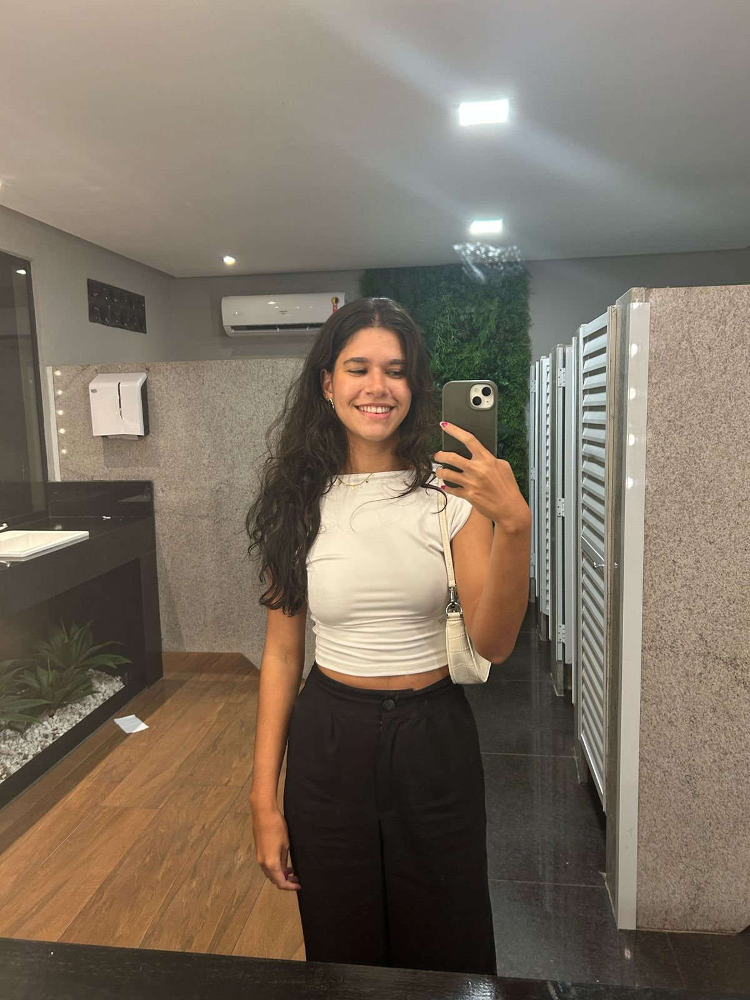

Meu nome é Tainá Ramos de Jesus Meirelles, tenho 19 anos e estou cursando Ciência da Computação na UVV.
| Currículo | | | GitHub | | | Serviços | | | Contato |
|---|
Meu nome é Tainá Ramos de Jesus Meirelles, tenho 19 anos e estou cursando Ciência da Computação na UVV.
Eu sou capixaba, cristã, moro com meus pais, meus dois irmãos, meu primo e meu gatinho, Dexter.
Meu objetivo profissional, no momento, é me capacitar para conseguir trabalhar em alguma empresa estrangeira, talvez na área de cyberseguraça ou de inteligência artificial.
Eu amo ir à praia, estou frequentemente servindo na igreja, vou na academia e amo assistir séries/filmes.
Meu esporte favorito é o vôlei (apesar de não jogar muito.), e minha música favorita, no momento, é "Sê Valente", do Marcos Almeida.
Eu estudei do maternal ao ensino médio na Escola SEB - Vila Velha, sempre tive mais facilidade na área de exatas, durante a escola estudei para algumas federais como IFES e UFES, no início de 2025 fui aprovada em Ciência da Computação na UFES, entretanto permaneci na UVV.